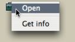

OpenMusic DocumentationHiérarchie de section : OM 6.6 User Manual > Visual Programming II > Instances > Global Variables
OpenMusic DocumentationHiérarchie de section : OM 6.6 User Manual > Visual Programming II > Instances > Global Variables
Navigation : page précédente | page suivante
Attention, votre navigateur ne supporte pas le javascript ou celui-ci à été désactivé. Certaines fonctionnalités de ce guide sont restreintes.
Global Variables
Global variables are "globalized" instances.
General Properties
Advantages
A global variable is an instance[1] associated with the workspace where it was created. It can be used in several programs of the same workspace. It is designed so that any modification of the instance is incorporated into all its representations .
Instances and Global Variables
When defining a chord, a metric sequence, manipulating an audio file, the user creates a specific instance[1] from a class[2].
| This instance can be materialized in the current patch editor by instance boxes . Instance boxes are grey. | |
| It can also be exported as a global variable to a workspace where it will be stored in the Globals package of the Library |
Using a Global Variable
Reference of a Global Variable
A global variable can be used in several different places , but all boxes created from it correspond to the same instance.
When evaluated, the box always returns the same instance.
A same global variable can be present in several different places : it refers to several boxes.
Modifications : Effects
Any modification of a global variable will affect all of its representations, as well as the master item.
Modifying a global variable affects each of its references.
Modifying one of its references equally affects the variable itself and all its references .
Connections to Other Boxes
A global variable box can be connected to other boxes, just as an instance box.

Creating a Global Variable From an Instance
Adding a Global Variable in the Library
Open the Globals package in the Library window :
|

|
Select an instance and drop it in the Globals package window. The instance box in the patch is converted into a global variable box automatically.

Adding a Store Object in the Globals Package

|
The store object is a general-purpose object , which is designed to store any type of data. A global variable created in the Globals package is an instance of the Store class, where any type of object can be stored. To add a global variable in the Globals package, open the Globals package and select |
More About the Store Object
Modifying a Global Variable
Name
The variable can be renamed in the Globals window. All related elements in the patch will be affected by this change immediately. They will have the same name and reference.

Parametric Values : Using the Slots Box
Like an instance box, the global variable box appears without inputs. Parametric values of global variables can be accessed and modified via a specific type of box : the slots box.
How to Modify Instance Boxes
Modifying a Global Variable from its Editor
A global variable can also be modified using its editor, like any instance or factory box.
Modifying an Instance
Références :
Instance
An actual object created at runtime, out of a given class. In OM, more specifically, an object created when evaluating a factory box. An instance can be saved as a global variable.
⤷
SHIFTclick on an outlet – especially the first outlet representing the self, the whole object – of a factory box to materialize an instance.Class
A category of objects sharing common properties – characteristics and behaviour. A class specifies the internal structure and behaviour of an object. In OM, it is represented in a patch by a factory box that can produce an instance of a class.
See also : Object, Instance
Plan :
Navigation : page précédente | page suivante
A propos...(c) Ircam - Centre Pompidou